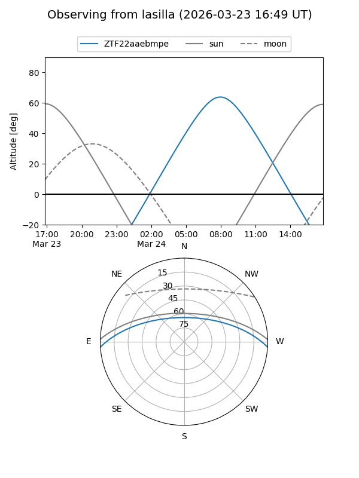
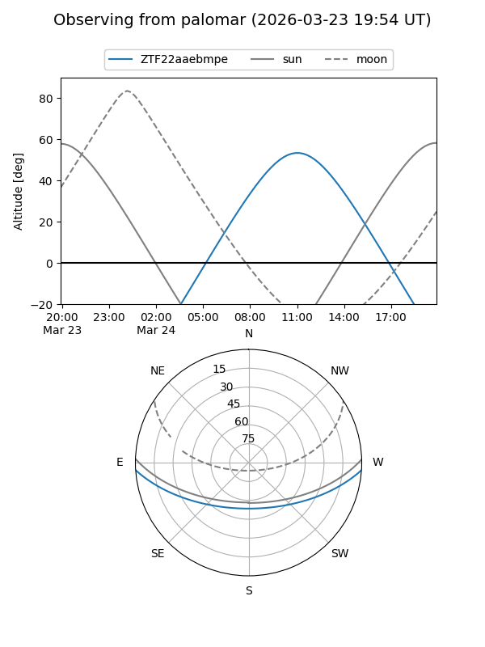

ZTF22aaebmpe
Target ZTF22aaebmpe at 2026-03-23 12:24
Aliases and brokers:
FINK: link
Lasair: link
ALeRCE: link
alt names
ZTF22aaebmpe (ztf,fink_ztf)
Coordinates:
equatorial (ra, dec) = 230.0269,-3.10239
equatorial (HMS+DMS) = 15:20:06.47,-03:06:08.62
galactic (l, b) = (358.6658,+43.11697)
Flags:
Photometry:
last ztfg=16.70
1 ztfg detections
Lightcurve
Visibility


Additional plots